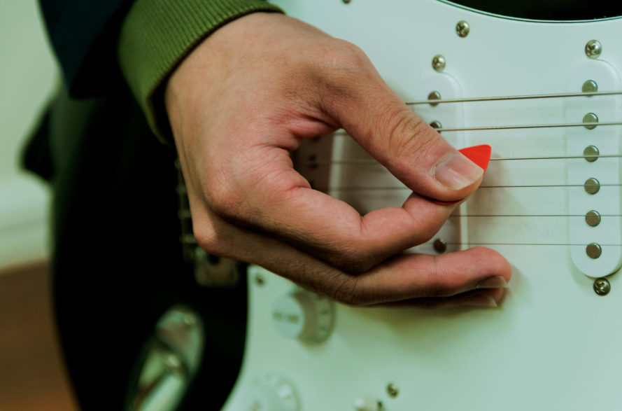

INICIO
VIDEOS
MI MUSICA
NOTAS
CONTACTO
La tecnica de la plumilla

La forma de agarrar la plumilla es primordial
si atacamos las cuerdas con la plumilla un poco acostada
encontraremos un ataque mas suave y mas controlada
esto puede ayudar a la ejecucion rapida